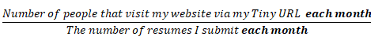
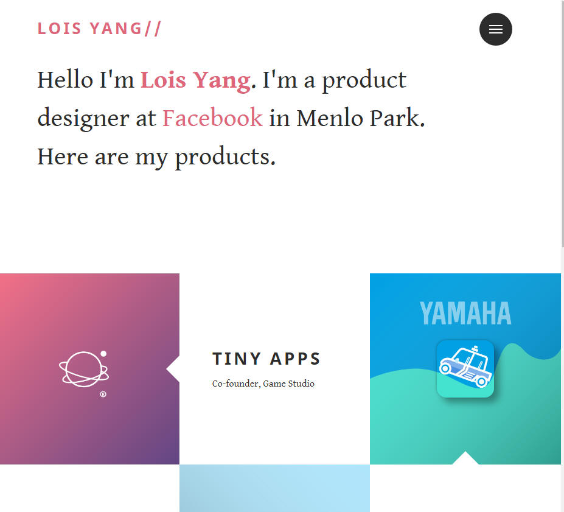
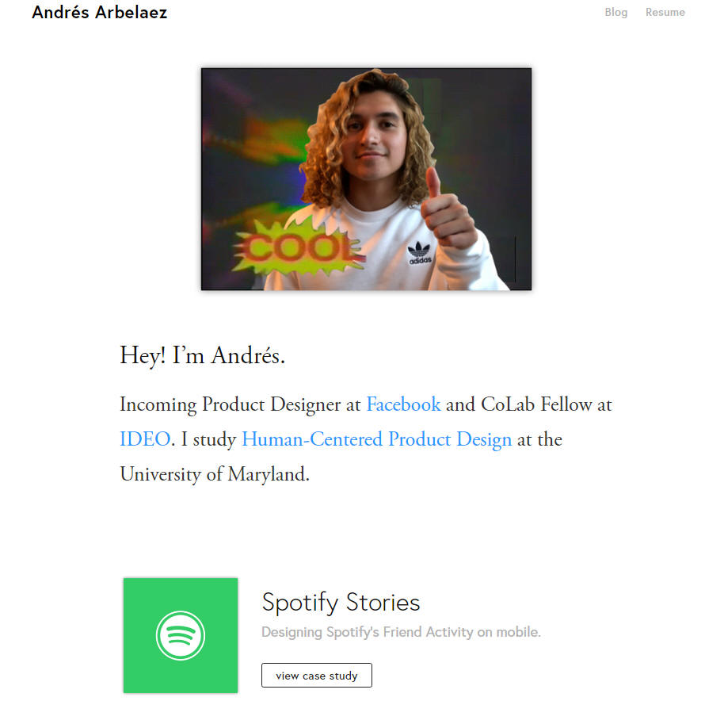
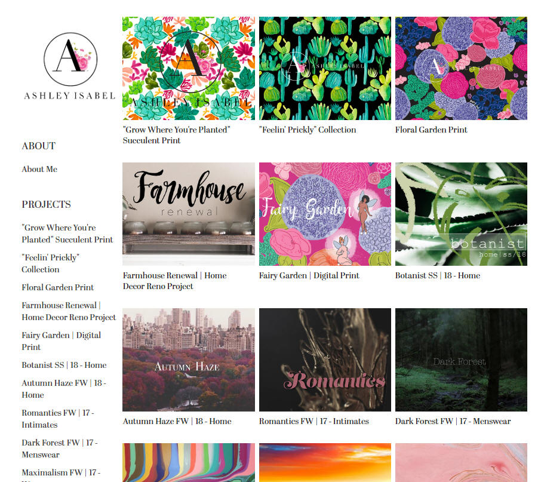

Time : June 2018 to Present
Project : Improve my website review rate from 2% to 10% Review Rates.
Role : Full stack developer and User Researcher
Background :
Review rates are tracked via the number of people that click on my URL or visit my website. Here is the formula I will use for calculating the Review Rates.

As I was making the switch from pure engineering to product design, I knew I needed to give my self a big challenge so I could see if product design was really for me. Now, I grew up afraid of HTML for some reason. It was just that thing I pictured when I though of a super hard coding language despite having minimal experience without outside of being used in conjunction with JavaScript. And without a formal class at my university for it, I chose to teach myself how to develop a full functioning website. But I wouldn’t just make it by following a tutorial, I decided to interview some engineering students on what it took for them to get their websites viewed by companies AND how to get them to at least visit the website.
First I decided to get inspiration from product designers working at companies I admire via Linkedin. After looking at a few dozen, I narrowed down 3 designs I found personally appealing.

This app is very interactive and it grants the user the ablity to move though the apps quickly with reactive tiles that are associated with individual projects. I knew that I wanted to incoperate this into my project.

This portfolio was particulalry inspiring because it got me interested in doing case studies to record my project documentation. I saw that personal projects and challenges were good portfolio peices. I also learned flair isn't everything (extremly important for someone new to HTML at the time).
I fell in love with the idea of using tiles to demonstrate my work accross multiple disciplines. So I decided to make sure that I did it for each of my website attempts.
So I my first plan to develop my own art style was to find a way to incorporate what I liked about each one. I loved how they all :
- Link to resume
- The bibliography at the bottom
- And elegant designs
This lead me to developing this website primary design : Project Alpha


It included a nice smoky background and simple contrasting fonts and allowed me to learn some basic color theory. One of the lessons I loved was how if you want to be remembered you need: 1) a strong contrast of colors or 2) a lot of shades of red. And since white goes with everything, I looked for a dark set of
It included a nice smoky background and simple contrasting fonts and allowed me to learn some basic color theory. One of the lessons I loved was how if you want to be remembered you need: 1) a strong contrast of colors or 2) a lot of shades of red. And since white goes with everything, I looked for a dark set of colors that seemed interesting. As you scroll down you see the basic information and my bio. This was mostly an exercise of basic Html structuring and importing .jpg and .png files. And it did fail to improve my website retention rate.
This was my intintal default website for my resume and it was sent along with my resume to 122 companies. Out of those companies 2 viewed the website so it had a review rate of roughly 1.6% .
- I learned basics of Html
- Learned how to upload a resume
- “Lack of content”
- “A designer should have some designs to supplement information”
- “Photos would be helpful”
- “The resume isn’t tailored for any real job”
- Complete some hackathons and work on personal projects
- Make my designs more so my own.
- Take photos of my work
- Make my resume not geared toward design engineering ( because that is a title truly for a professional engineer of practice) but just for product development.
Now since the issues with version Alpha weren’t solely about the code, I chose to develop a project that let me focus on the content.
So for Project Beta I developed a website using a free Google Site template.
I designed it from scratch and I was sure to still apply the color theory I learned from the previous project as well as the structure I developed so that I could reprogram the same project if I desired it.
This way, I could focus 100% on gathering the information needed.
o
Design 3 ( Current site
) 
What I did
o Feeback (3.5 / 5)
o My Plan